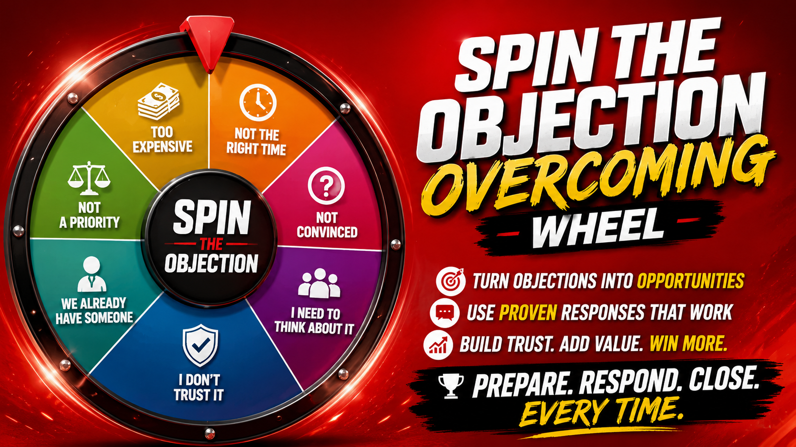
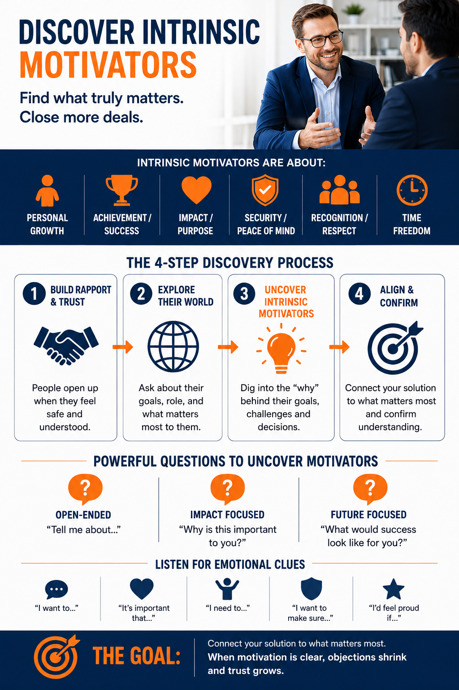

They just said something that stopped you cold.
Type it into the box. In about a second you get the reframe, two scripts you can actually say out loud, and the one move that ends the conversation in your favor. 216 real objections, answered by sales trainer Zach Wennstedt, with no signup and nothing stored.
What does a sales trainer do?
A sales trainer documents how a company actually sells, turns it into a written process anyone can run, and drills it until it holds under pressure. The work is call review, stage design, objection scripting, and coaching against a scorecard. A trainer who leaves only a binder gave a speech. A trainer who leaves a repeatable process changed the business.

Spin it, answer it out loud, then check yourself
This is a drill, not a toy. You get a live objection from a random family and fifteen seconds to say your answer out loud before the script appears. Ten spins a day for two weeks and you stop freezing. Managers: run it on speaker in the morning huddle and make everyone take one.
No spins yet today
You get a real objection from a random family. Say your answer out loud before the timer runs out, then compare it to the script.
The sales training makeover
Most training gets layered on top of whatever a company was already doing. A makeover replaces it. One documented process, one presentation everybody delivers the same way, one objection library built from your own recorded calls, and the same argument running through your website so a prospect hears one consistent story from first click to signature.
Here is the problem with training a team while leaving everything around them untouched. You teach reps to frame decision criteria before they quote, and then a prospect lands on a website that leads with a price and a form. You teach them to open by demonstrating they understand the buyer's situation, and the homepage opens by talking about the company. The rep is now fighting the first impression your own marketing made. A makeover fixes the whole chain instead of one link in it.
The written process
Seven phases with entry conditions, required behaviors, and exit gates, built around your product and your actual sales cycle. Not a framework with your logo on it.
The systematic presentation
One presentation the whole team delivers identically, sequenced around your buyer's decision criteria, with the psychological mechanics built in rather than bolted on.
Your own objection library
Pulled from your recordings, not from a generic list. Every objection your buyers actually raise, with a reframe, two scripts, and the isolation question that stops the queue.
The same story on your site
The discovery questions, the decision criteria, the objection answers, and the proof, rewritten into your website in the order a buyer needs them. Turnkey, and consistent whether they meet you on a page or a porch.
What a makeover changes that a workshop cannot
- New hires stop guessing. Week three instead of month nine, because there is a documented thing to hand them.
- Your best performer stops being a single point of failure. Her method is on paper, which means it survives her next job offer.
- Discounting drops without a policy fight. Reps discount when they run out of things to say. Give them things to say.
- Your marketing stops undercutting your reps. Same criteria, same language, same order, on the page and in the room.
- The business gets more valuable. A revenue engine that runs without the founder in the room is a transferable asset. One that depends on you personally is a job with employees.
Everything on this page
- Why your sales team is stalling
- What untrained selling actually costs
- Why most sales training fails
- The systematic selling system
- The Do The Right Thing course
- The physics of an objection
- The twelve objection families
- Value over price, in detail
- Every major sales methodology
- What 1912 already knew
- Writing a script people don't hate
- Discovery, the part everyone skips
- Numbers that predict revenue
- Coaching is not managing
- How to choose a sales trainer
- Your five options, compared
- Training packages
- Selling by industry
- Who Zach Wennstedt is
- Questions people ask
Why your sales team is stalling
Almost no sales team has a talent problem. Nearly every sales team has a consistency problem. Your best rep and your worst rep are having completely different conversations with identical prospects, and neither one could write down what they actually do. That is not a personnel issue. That is a missing system.
Here is what it looks like from the inside. You hire someone who interviewed beautifully. You give them a product sheet, a login, and a two-week ride-along with whoever happens to be free. They pick up habits by osmosis, some good, most accidental. Three months in they are producing at forty percent of your top performer and nobody can articulate why. So you send them to a seminar. They come back energized for eleven days. Then the energy fades and they go right back to what they were doing, because a seminar gave them motivation and what they needed was a process.
Meanwhile your top performer is a black box. She closes at three times the team rate, and when you ask her how, she says she builds rapport, or she listens. She is not being cagey. She genuinely does not know. Her method is stored in muscle memory, not in language. The moment she leaves for a competitor, thirty percent of your revenue walks out with her and it takes eighteen months to rebuild.
That is the actual problem. Not motivation, not headcount, not the CRM. The knowledge that produces revenue in your company lives inside individual skulls instead of inside a documented, teachable process that anyone you hire can execute in week three instead of month nine.
The five stall patterns
Across manufacturers, contractors, agencies, med spas, home services, professional practices, and B2B software teams, the same five patterns keep showing up.
The pitch loop
The rep talks for eleven minutes before asking a question. Enthusiasm gets mistaken for persuasion. The prospect goes quiet, asks for information, and disappears. Nobody notices the deal died at minute two.
The objection freeze
A concern lands that nobody planned for. There is a pause. The rep over-explains, gets defensive, or drops the price on the spot. The buyer now knows the first number was fiction.
The pipeline mirage
Forty deals in the CRM, thirty-two of which are people who were polite once. The forecast is fiction because nobody ever defined what a real opportunity is, so everything qualifies.
The one-call trap
Every deal is treated as a single conversation instead of a sequence with defined exits. No next step gets booked on the call, so follow-up becomes chasing, and chasing reads as desperation.
The fifth pattern is the quietest and the most expensive: nobody knows what good sounds like. Ask five people on a team to describe an excellent discovery call and you get five different answers. If excellence is undefined it cannot be coached, measured, hired for, or repeated. Everybody is just trying hard in slightly different directions.
Talent is what you already have. A system is what you can hand to someone who doesn't have it yet.Zach Wennstedt
What breaks the pattern is not a pep talk. It is writing the thing down. Getting the sequence out of your best performer's head and onto paper. Naming the stages. Defining what has to be true to move between them. Building the objection responses in advance instead of improvising them at the worst possible moment. Then drilling until it is boring, because boring is what reliable feels like from the inside.
What untrained selling actually costs you
Most owners underprice this problem because the cost is invisible. Nothing shows up on the income statement labeled "deals we lost because Kevin panicked when they asked about the warranty." So let's make it visible.
Take your average deal value. Multiply it by the number of qualified conversations your team had last month. That is your theoretical ceiling. Now multiply by your actual close rate. The gap between those two numbers is your training budget, and it is almost always an order of magnitude larger than what quality training costs.
A team having 80 qualified conversations a month at a $6,000 average deal has a $480,000 monthly ceiling. At a 15% close rate they book $72,000. Move the close rate to 22%, a seven-point improvement and a very ordinary result from fixing discovery and objection handling, and the same conversations, the same leads, and the same marketing spend now produce $105,600. That is $33,600 a month, roughly $403,000 a year, from talking to the exact same people differently.
Then add the costs that never show up in close rate at all.
- Discount leakage. Untrained reps buy deals. Every five percent dropped to escape an uncomfortable silence comes off the bottom line at 100% margin. A team giving away an average of 6% on $900,000 in annual bookings burns $54,000 a year to avoid discomfort.
- Ramp time. A new hire without a documented process takes six to nine months to reach quota. With one, twelve to sixteen weeks is realistic. Every month of shortened ramp is a month of full production you were previously paying salary for and not receiving.
- Turnover. Reps do not quit because the product is hard. They quit because they are failing and nobody can tell them precisely why. Failure without diagnosis is demoralizing. Replacing a rep costs between half and twice their annual compensation once you count recruiting, onboarding, lost pipeline, and management hours.
- Marketing waste. If you spend money generating leads and hand them to people who cannot convert them, you are not running a marketing program. You are running an expensive lead disposal service. If that is where your money is going, fix the conversations before you buy more traffic, then get the traffic right with a Denver SEO company that measures what happens after the form fill.
- Reputation drag. A prospect who has a bad sales conversation does not just decline. They tell people. In small markets and tight verticals, three bad conversations can quietly close a referral channel for years.
There is one more cost owners feel but rarely name: you become the closer. Every complicated deal escalates to you. You cannot take a vacation, you cannot build anything, and the business cannot be sold at a decent multiple because a buyer can see plainly that the revenue engine is you personally. Systematizing the sale is one of the most reliable ways to increase what your company is worth, because it converts a founder-dependent operation into a transferable asset.
Why most sales training fails
If you have already bought sales training and it did not stick, you were probably sold one of these five things.
The motivational event
A charismatic speaker, a hotel ballroom, and a room full of people feeling great. Zero behavior change on Monday, because feelings decay and nothing was written down. Inspiration is a fuel, not an engine.
The generic curriculum
Content built for "salespeople" in general. Your team sells a $40,000 custom install with an eight-week decision cycle and three stakeholders. Generic training cannot name your buyer's actual objections, so it never touches the moment where deals die.
The manipulation playbook
Manufactured urgency, guilt, cornering language, and pressure applied to people who should have been told no. Modern buyers have seen all of it. The techniques themselves are neutral, but pointed at someone the product will not help they become a con, and buyers feel it even when they cannot name it.
The software rollout
Buying a tool and calling it a process. The CRM is a filing cabinet. It records what your team does. It cannot decide what they should do, and it has never once told a rep what to say when a buyer says "let me talk to my partner."
The fifth failure is the one nobody talks about: training without reinforcement. The research on skill acquisition is unambiguous and applies as much to selling as to a golf swing. A single exposure to information produces almost no durable change. Industry figures put sales training retention at roughly 16% after ninety days, and a large share of any single delivery is gone within the first week. Skills form through spaced repetition, immediate feedback, and practice under mild pressure. A two-day workshop with no follow-up produces a binder. Eight weeks of short drills with call review produces a different salesperson.
This is exactly why the free tools on this page exist. The objection engine and the wheel are not lead magnets pretending to be useful. They are reinforcement mechanisms. Sixty seconds of spaced repetition a day beats a $15,000 workshop nobody revisits. If you use nothing on this site but the wheel, every morning, for a month, your team gets measurably better and I have not made a dollar. That is fine. It is also the most honest advertisement I can write for what the paid work does.
If your training doesn't survive contact with a real prospect on a Tuesday afternoon, it was entertainment.The reinforcement rule
The systematic selling system
Seven phases. Every phase has an entry condition, a required behavior, and an exit gate, and a deal cannot move forward until the gate is satisfied. This is the backbone of every engagement I run, rebuilt each time around your product, your buyer, and your cycle length.
Phase 1 Target
Before anyone dials, define who is actually worth talking to. Not a demographic, a set of observable qualifying conditions: company size, trigger events, budget indicators, decision structure, urgency signals. The most common revenue leak in small business is excellent selling aimed at people who were never going to buy.
Exit gate: the prospect matches at least three written qualifying criteria.Phase 2 Open
The first ninety seconds decide whether you get a conversation or a brush-off. You are not building rapport with weather talk. You are earning the right to ask questions by demonstrating in one sentence that you understand their situation better than the last three people who called.
Exit gate: the prospect has agreed to a specific block of time and knows what you will cover.Phase 3 Discover
The longest phase and the one that determines everything downstream. You are mapping four things: current state, desired state, the cost of the gap, and the decision process. You are not hunting for pain to exploit. You are finding out whether a real problem exists that you can genuinely solve.
Exit gate: the prospect has stated a problem in their own words and attached a number or a consequence to it.Phase 4 Frame
Before you present anything, establish the criteria by which a good solution should be judged. Whoever sets the decision criteria usually wins the deal. If your competitor sets them, you spend the rest of the cycle defending.
Exit gate: the prospect has agreed out loud to the three or four factors that matter most.Phase 5 Present
Now, and only now, you talk about what you do. The presentation is not a tour of your capabilities. It is a point-by-point mapping of their stated problems to your specific mechanisms, using their words. If you say something they never told you mattered, cut it.
Exit gate: the prospect has confirmed the solution addresses what they described.Phase 6 Resolve
Objections are not an interruption of this phase. They are the phase. A genuinely engaged buyer raises concerns, and your job is to surface the hidden ones rather than hope they stay hidden. Every objection gets acknowledged, isolated, reframed, and closed with a forward-moving question.
Exit gate: the prospect confirms nothing else stands between them and yes.Phase 7 Commit
The close is not a moment of pressure. If phases one through six were done properly, the close is administrative. You confirm the decision, define the first three steps, name dates, and get the paperwork moving while momentum is live.
Exit gate: a signed agreement, or a booked next action with a date and a named owner.The rule Never skip a gate
The single most valuable habit any team adopts from this system. Most losses are not caused by weak closing. They are caused by a rep who presented before discovering, or quoted before framing. When a deal goes sideways, the fix is almost never at the end. It is at the gate you jumped.
How to use it: in every deal review, name the gate that was skipped before you discuss anything else.The Do The Right Thing Sales Perfect training course
My premium sales training course, built on one question a salesperson should be able to answer before every close: is this actually going to help this person? If the answer is yes, move forward with everything you have. If the answer is no, stop. That is the whole foundation, and everything else is built on top of it.
Most sales training starts with technique and never gets to ethics. This one starts with ethics and earns the right to teach technique. Not out of sentimentality. The techniques only work reliably when they are pointed at something true. A trial close aimed at a person your product will genuinely help is a service. The same trial close aimed at someone it will not help is a con, and buyers can feel the difference even when they cannot name it.
So the standard is simple and it is the name of the course. Treat the prospective client the way you would treat yourself or your own family. If your mother were sitting in that chair, would you recommend this? This configuration, at this price, on this timeline? If yes, then you owe it to her to be persuasive, because a person who needed help and did not get it because you were timid is not an ethical outcome either. Under-selling something that would have genuinely helped someone is its own kind of failure.
If it's right for them, closing hard is a service. If it isn't, closing at all is a con. Everything else is technique.Zach Wennstedt, Do The Right Thing Sales Perfect
The five buyer self-interests
Here is the part that surprises people. Buyers look infinitely varied on the surface, different industries, budgets, and personalities, and underneath nearly all of them are running the same five programs. Every purchase decision a human being makes traces back to at least one of these.
Health
Their body, their pain, their energy, their years. The most powerful of the five and the one where guidance matters most, because people are frequently wrong about what will help them and know they are wrong.
Family
Protecting the people they are responsible for. This overrides budget more often than any other motivator, and it demands the most integrity from the person selling.
Finances
More coming in, less going out, or less at risk. Not greed, security. Most buyers are not trying to get rich. They are trying to stop worrying.
Safety
Removing a threat, real or anticipated. Safety motivators are unusually resistant to price objections, because the alternative is a consequence the buyer has already imagined.
Ease
Less friction, less time, less hassle, fewer things to hold in your head. The quietest of the five and the one most often left on the table because nobody asked about it.
Where two overlap
When your product genuinely serves two or three of these at once and the buyer can name which, you are no longer selling. You are confirming a conclusion they reached themselves.
Nobody sells better than they sell themselves
This is the technique at the center of the course and the one that changes reps fastest. Stop describing the benefit. Ask them to describe it.
You can tell someone a new mattress will improve their back. It is a claim, it came from you, and their brain files it under things a salesperson said. Or you can ask: "What do you think your back is going to feel like after a month of sleeping on proper support?" Now they are building the picture in their own head, in their own words, with their own history of back pain attached. You did not persuade them. They persuaded themselves, and the argument they built is more compelling than anything you could have written, because it is made out of their actual life.
Same move, different verticals. "What would it mean to know your kids are playing in a neighborhood you don't have to worry about?" "If you weren't spending six hours a week on this, what would you be doing instead?" "How would it change your month if that bill just went away?" Every one of those hands the persuasion job to the only person in the room whose opinion the buyer completely trusts.
Why it works, and why that matters
Buying is conditioning. It is neural connectivity, associations built over a lifetime firing in a particular sequence. When a buyer imagines a future state, that mental rehearsal builds and strengthens the connection between your product and the outcome they want. That connection is what a decision is made of. You can build it for them, badly, with claims. Or you can prompt them to build it themselves, strongly, with questions.
This is also why the ethical foundation is not decoration. These techniques genuinely work. They work on people making decisions about their family's safety and their own health, which is serious business, and people in those moments frequently need guidance on what to do and what to buy. Being handed a tool that effective without a rule for when to stop using it is how salespeople end up doing damage they did not intend. The rule comes first for a practical reason: the tools are strong enough to need one.
What the course covers
- The Do The Right Thing standard. The pre-close question, how to apply it in real time, and how to walk away in a way that wins the referral anyway.
- The five self-interests. Identifying which are live for a given buyer, and the discovery questions that surface them without an interrogation.
- Self-selling questions. The technique above, drilled against your specific product until it is a reflex instead of a party trick.
- Tie-downs. Confirming agreement in small increments so the final yes is the eighth yes rather than the first. Used honestly this is just checking you are still together. Used dishonestly it is cornering. The course teaches the line.
- Trial closes. Testing readiness before you ask, so you never ask into an unresolved objection and never miss a buyer who was ready three minutes ago.
- Price conditioning. Establishing context before the number lands, so the price is heard against a frame instead of against nothing. Anchoring, ranges, and sequencing.
- Question-sequence selling. The progression from situation to problem to implication to payoff, adapted to your sales cycle.
- Objection dissolution. The five-step method plus your own custom library, drilled live.
- The conditioning loop. How to build the association across multiple touches when your sale does not happen in one conversation.
The course is included in every training package below and can be licensed on its own for teams that already have a process and want the psychology and the ethical spine underneath it. If you want the objection component right now and free, the complete sales objection handling library is on this site with every objection and script, and every term appears in the sales training glossary.
The physics of an objection
An objection is not resistance. An objection is a request for information delivered in the grammar of refusal. When somebody says it is too expensive, they are almost never saying they have insufficient money. They are saying they cannot yet see why it costs what it costs. Those are completely different problems and they need completely different responses.
Untrained reps hear objections as attacks and respond defensively. Trained reps hear them as data and respond curiously. That single shift, from defending to investigating, changes more outcomes than any closing technique ever invented.
Stated objection against real objection
Every objection has two layers. The stated objection is what comes out of their mouth. The real objection is the thing underneath that they are unwilling to say, unable to articulate, or unaware of. People give socially acceptable reasons for decisions driven by unacceptable ones, and that is not dishonesty. It is ordinary human behavior.
| What they say | What it usually means | What to ask instead |
|---|---|---|
| "It's too expensive." | I haven't connected the price to an outcome I care about. | Compared to what? |
| "I need to think about it." | There's one unresolved concern I'm not saying out loud. | Totally fair. What specifically do you want to think through? |
| "Send me some information." | I want this call to end politely. | Happy to. What would need to be in it for it to be worth your time? |
| "I need to talk to my partner." | I'm not sold enough to defend this to someone else. | If they said yes right now, would you? |
| "We're happy with our current provider." | Switching feels like more work than staying. | What would have to change for you to look? |
| "Call me in six months." | This isn't urgent enough to displace what's on my plate. | What will be different in six months? |
| "I'm getting other quotes." | I don't know how to compare you, so I'm defaulting to price. | What are you comparing on besides the number? |
| "We tried something like this before." | I got burned and I'm protecting myself. | What went wrong last time? |
Look at that third column. Every single one is a question, not a rebuttal. That is the entire discipline. Answer a stated objection with an argument and you win the argument and lose the sale. Answer it with a question and you find the real objection, and the real objection is usually far easier to solve than the fake one.
The five-step method
Every response in the engine at the top of this page follows the same structure, because structure is what lets a nervous person perform under pressure.
- Pause. Two full seconds, no sound. Uncomfortable, and the highest-leverage two seconds in selling. Instant responses sound rehearsed, which tells the buyer you have heard this a thousand times and they are not being listened to. The pause says you took it seriously.
- Acknowledge. Reflect it back in your own words and let them confirm. "So the concern is that the up-front number is bigger than what you budgeted for this quarter, is that right?" You have made them an ally in defining the problem instead of an opponent.
- Isolate. "If we solved that, is there anything else keeping you from moving forward?" This one question prevents the most demoralizing pattern in sales, solving objection one and getting objection two, forever. Isolation converts an infinite queue into a finite list.
- Reframe. Change the axis of comparison. They are comparing your price to a competitor's price. You move it to cost per year of ownership, or the cost of the problem continuing, or the price of the second-cheapest failure. A reframe is not a trick. It shows them a dimension of the decision they had not considered.
- Advance. End with a small forward-moving question, not a request for the whole decision. "Does it make sense to get the site measurement on the calendar so you have real numbers?" is easy to say yes to. "So do you want to move forward?" restarts the entire deliberation.
You don't overcome objections. You dissolve them by finding out what was actually being asked.The core discipline
The twelve objection families
There are hundreds of objections and roughly twelve underlying reasons behind all of them. Learn the families and you can improvise your way through an objection you have never heard, because you will recognize its shape.
Price
Too expensive, not in the budget, your competitor is cheaper. The buyer has not connected cost to outcome. Almost never about available money. Reframe onto value, ownership cost, or the cost of inaction.
Timing
Not right now, call me next quarter, we're in the middle of something. Urgency is missing or a competing priority is winning. Attach a cost to the delay itself.
Trust
Never heard of you, how do I know you'll deliver, you're too small. Risk is the real currency. Answer with proof, guarantees, references, and reversibility, not adjectives about yourself.
Authority
I need to run it by my partner, board, or spouse. Either they genuinely cannot decide, or they can and are hiding behind someone. Both are solvable, differently. Find out which one you have.
Need
We're fine, I don't think we need this. Discovery failed. Do not present harder. Go backward and find a problem they will admit to owning.
Competitor
We already use someone. Switching cost, not satisfaction, is usually the barrier. Never attack the incumbent, because you insult their past decision. Ask what they wish were different.
Status quo
The hardest competitor in every market is doing nothing. Inertia costs zero today and everything eventually. Quantify what standing still is costing right now.
Risk
What if it doesn't work. Fear of a visible, blameable mistake. De-risk with pilots, phasing, guarantees, and a written picture of what happens if it goes wrong.
Fit
We're different, that won't work in our industry. They think you built this for someone else. Answer with a near-identical case, not with reassurance.
Comparison
I'm getting three quotes. They lack criteria, so price becomes the only visible axis. Give them a comparison framework, ideally one you win on for honest reasons.
Bandwidth
We don't have time to implement. A real objection disguised as a soft one. Show the actual hours required and who does what.
Apathy
Ghosting, one-word replies, endless circling back. The least discussed and most common. The deal never had a real problem attached. Give them permission to say no and you usually get a real answer.
Value over price, in detail
Price is the objection everyone asks me about, so it gets its own section. Internalize this first: price is only an objection when value is unclear. Nobody argues about the price of something they desperately want and clearly understand. When somebody pushes back on cost, they are telling you that in their mind the two sides of the scale are not balanced. You have exactly two moves. Lower the price, or raise the perceived value. One destroys your margin permanently and teaches your market that your prices are negotiable. The other one is the job.
The seven price reframes
These are the seven axes you can move a price conversation onto. Each is a different way of showing the buyer that the number they are staring at is not the number that matters.
- Cost of inaction. The comparison is not your price against zero. It is your price against what the problem costs to keep. "The system is $8,400. You told me the current process eats about six hours a week of your time. At your billing rate, that problem costs you roughly $31,000 a year, every year, forever."
- Cost per unit of time. Break the number into the smallest honest denominator. A $6,000 system that lasts seven years is $71 a month. A $30,000 investment producing $200,000 in revenue is fifteen cents on the dollar. Do not do this dishonestly, do not divide a subscription by a lifetime, but do let them see the real ratio.
- Total cost of ownership. The cheaper option is frequently more expensive. Include installation, downtime, replacement cycle, maintenance, staff time, and the cost of doing it twice. "Theirs is $2,000 less today. It also needs replacing in year four instead of year eleven. Over the same decade you'd buy theirs three times."
- The shopping tax. The one people underuse. Collecting and comparing four proposals costs real hours: calls, site visits, reading, meetings, negotiating, second-guessing. "You've already found a company you like that fits. Three more quotes will take about eleven hours over five weeks to maybe save four hundred dollars. What are eleven hours of your time worth?"
- Risk-adjusted price. The cheapest bid is cheapest for a reason, and the reason is a risk you are being asked to absorb. Price the risk out loud. "Their number assumes nothing goes wrong. Mine includes the contingency. If nothing goes wrong, they were cheaper. If anything does, you'll pay the difference and then some, and you'll pay it under pressure."
- The already-decided reframe. When someone has made up their mind about what they want and is only balking at the number, remind them of the decision they already made. "You told me forty minutes ago the current setup is costing you customers and you want it fixed before spring. Nothing about that changed in forty minutes. The only question left is whether you fix it now or after another season of losing them."
- Value per outcome. Convert the price into a per-result number. "If this brings in four new clients a year and your average client is worth $9,000, it pays for itself in month three and everything after that is profit." Be conservative, use the number you can defend, and say out loud that you are being conservative.
What to do when they are genuinely broke
Sometimes the price objection is literal. The money is not there. Reframing does not create funds, and pushing a person who cannot afford something into buying it is how you earn a refund, a bad review, and a bad night's sleep. When the constraint is real you have four honest options: phase the project into stages they can afford, reduce scope to the highest-value component, help them find financing if that genuinely serves them, or tell them the truth, that now is not the moment, and set a specific date to revisit. That last one wins more long-term business than any close ever written, because the person who told them the honest thing is the person they call when the money shows up.
Discounting is not a sales skill. It's what happens when a sales skill is missing.Zach Wennstedt
Every major sales methodology, explained plainly
People ask which methodology I teach. The honest answer is that none of them is complete and all of them contain something true. Here is what each one actually contributes. These are frameworks and trademarks belonging to their respective authors and publishers; what follows is my own plain-language summary of the ideas, not their materials.
Question-based consultative selling
Popularized in the 1980s through research into what high performers do differently in complex sales. The core finding: top performers ask a sequence that moves from situation, to problem, to the implications of that problem, to what solving it would be worth. Worth stealing: the implication questions do the persuading. When a buyer says out loud what the problem is costing, they persuade themselves in a way you never could.
Qualification frameworks
Budget, Authority, Need, Timeline, a 1960s IBM checklist that survives because it is memorable. Later versions added metrics, decision criteria, decision process, pain identification, and finding an internal advocate. Worth stealing: qualification is not a form, it is a set of things you must learn or you are guessing. The failure mode is treating it as an interrogation. Get the same information through conversation.
Teaching-led selling
Research in the 2010s suggested the highest performers in complex B2B sales are not the relationship-builders but the ones who teach buyers something surprising about their own business, tailor it to the person, and take assertive control of the conversation including money. Worth stealing: bring an insight, not a brochure. If your buyer learns nothing from your call, you were a catalog with a pulse.
Pain-and-qualification selling
Built around mutual up-front agreements about how the conversation will go, the idea that no is an acceptable and useful answer, and disqualifying aggressively rather than chasing. Worth stealing: the up-front contract. Agreeing at the start on agenda, time, and what outcomes are possible, including a mutual no, removes almost all of the weirdness from a sales call.
AIDA, 1898
Attention, Interest, Desire, Action. Attributed to advertising pioneer Elias St. Elmo Lewis and thoroughly in the public domain. It is well over a century old and every landing page, cold email, and pitch deck still runs on it. Worth stealing: sequence matters. You cannot create desire in someone whose attention you never got.
Value and ROI selling
Building the case in the buyer's financial language: cost of the current state, quantified benefit, payback period, risk of inaction. Essential wherever a committee has to approve. Worth stealing: your champion has to sell this internally without you in the room. Give them the numbers and the one-page argument to do it with.
What I build for clients is not a branded methodology. It is a process assembled from the parts that fit your deal: question sequences for complex sales, tight qualification for high volume, teaching content for skeptical technical buyers, up-front contracts for anyone whose calendar is under siege. The methodology should serve the sale, not the other way around.
What 1912 already knew about selling
Here is something that will save you money. Most of what gets sold as cutting-edge sales insight was published before the First World War, is out of copyright, and can be downloaded free right now. I read this material constantly, partly because it is good and partly because it is a useful antidote to hype. When a course promises a revolutionary new closing technique, it helps to know that Norval Hawkins was explaining the same psychology to Ford dealers in 1920.
These are genuinely public domain in the United States and free to read, quote, and build training on, with no license and no fee.
Certain Success
Norval A. Hawkins, 1920. Hawkins ran sales for Ford during the Model T era, which makes him arguably the most operationally experienced sales author in the public domain. His work on organizing selling as a repeatable system rather than a personal gift is the direct ancestor of everything on this page. Read it free at Project Gutenberg.
The Psychology of Salesmanship
William Walker Atkinson, 1912. An early attempt to describe what happens inside a buyer's mind during a sale. Some of the psychology has been superseded and some holds up remarkably well, particularly on attention, suggestion, and the difference between interest and desire. Free at Project Gutenberg.
Selling Things
Orison Swett Marden and Joseph Francis MacGrail, 1916. Broad, practical, and unusually good on the ethics of selling, especially the argument that a sale which does not serve the buyer is a failure regardless of whether money changed hands. Free at Project Gutenberg.
Letters From an Old Time Salesman to His Son
Roy Lester James. Written as correspondence, which makes it the most readable of the group. Excellent on territory management, persistence, and the daily discipline of the job, the unglamorous part that actually separates performers. Free at Project Gutenberg.
Two more free sources worth knowing about, both produced by the US government and therefore public domain by statute.
- O*NET, from the US Department of Labor, publishes structured task, skill, knowledge, and work-activity data for every sales occupation in the country. If you are writing a job description, a competency model, or an onboarding curriculum, this is a free skeleton to start from.
- The Bureau of Labor Statistics publishes wage, employment, and projection data by occupation and metro area. Useful for compensation benchmarking, territory planning, and finding out whether your comp plan is competitive before your best rep finds out that it isn't.
Everything in the objection engine on this page is original work, my own scripts written from my own client engagements. But the underlying principles are old, tested, and free, and I would rather you know that than believe there is a secret you have to buy.
How to write a script people don't hate
Half the sales teams I meet refuse to use scripts because they think scripts sound robotic. They are describing bad scripts. Every actor who ever moved you was working from a script. The script is not the problem. Reading it aloud like a hostage video is the problem.
A good sales script is not a paragraph to recite. It is a set of tracks: the specific question you ask at a specific moment, and the two or three most likely branches from the answer. You memorize the questions and the transitions. Everything between them stays yours.
The six rules
- Write it in spoken English, not written English. Contractions. Fragments. Short sentences. Read every line out loud before it goes in the binder. If it feels strange in your mouth it will sound strange in their ear.
- Script the questions, not the answers. Your reps should have twenty questions memorized cold and near-total freedom in how they respond. Locking down responses is what produces the robot effect.
- Include the silences. Mark on the page where the rep is supposed to stop talking. Untrained people fill silence. Writing "Pause. Say nothing." into a script is one of the highest-impact edits you can make.
- Use their words, not yours. Record ten calls and pull out the exact vocabulary buyers use to describe their problem, then put those words in the script. If your customers say jobs and your marketing says engagements, your marketing is wrong.
- Design for the branch, not the ideal path. Most scripts document the conversation where everything goes well, which is the conversation that needs the least help. Write the branches. What happens when they say no. What happens when they go quiet.
- Version it and date it. A script is a living document. When a new objection appears three times in a month it gets added. Teams that treat the script as permanent stop learning.
The test for whether a script is working: a competent new hire should be able to run a passable discovery call in week two. Not a great one, a passable one. If your onboarding cannot produce that, the knowledge is still trapped in people's heads.
Discovery: the part everyone skips
If I could change one behavior across every sales team in America it would be this: stop presenting so early. The urge to start explaining what you do is overwhelming, especially when you are proud of it, and it is the single most reliable way to lose a deal you should have won.
Discovery is not a warm-up for the pitch. Discovery is where the sale is decided. By the time you present, the deal is either won or lost, and the presentation only reveals which.
The four maps
A complete discovery produces four things. If you cannot fill in all four after the call you did not finish discovery, and any proposal you send is a guess with a price on it.
Current state
What they do now, how it works, who touches it, what it costs, how long it has been that way. Concrete and specific. "It's inefficient" is not an answer. "It takes Denise about six hours every Thursday and she's late on payroll twice a month because of it" is an answer.
Desired state
What good looks like in their words. Not what your product does, what their world looks like if the problem were gone. This gives you the language for your entire proposal.
The gap's cost
A number or a consequence. Money, hours, customers, risk, stress, a specific thing that happens if nothing changes. Without this there is no urgency, and without urgency there is no decision. Hardest of the four and the most valuable.
Decision process
Who decides, who influences, who can veto, what the steps are, what the timeline is, whether money is allocated, and what has to happen internally. Most reps ask about budget and stop. Budget is the least useful item on that list.
Ten questions that do the work
Steal these. They are deliberately open, deliberately uncomfortable in a couple of places, and they consistently produce more than the polite version does.
- Walk me through how this works today, start to finish.
- How long has it been that way?
- What made you take this call now, as opposed to six months ago?
- What have you already tried?
- What did you like and not like about how that went?
- If this stays exactly as it is for another year, what happens?
- Who else feels this problem besides you?
- What would have to be true for you to say this was worth doing?
- Walk me through how a decision like this actually gets made here.
- What's most likely to stop this from happening?
That last one is the one people are scared to ask. Ask it anyway. It is the single highest-yield question in selling, because the answer is the objection you would otherwise discover four weeks later in an email that says you've decided to go a different direction.
The numbers that actually predict revenue
Most sales dashboards measure outcomes you cannot control. These are the leading indicators that tell you what next quarter looks like while you can still change it.
| Metric | What it tells you | What to do if it's bad |
|---|---|---|
| Talk-to-listen ratio | Whether discovery is happening at all. Healthy discovery calls run roughly 40% rep and 60% buyer. | Drill questions. Put a timer on the desk. Review recordings weekly. |
| Next-step booking rate | Percentage of calls ending with a calendared next action. The strongest early predictor of close rate I know of. | Make it a non-negotiable close to every call. No exceptions. |
| Stage-to-stage conversion | Where deals actually die. Everybody quotes overall close rate; the useful number is which gate is leaking. | Fix the leaking stage. It is almost always earlier than you think. |
| Average discount given | Whether your team is selling value or buying deals. | Objection training plus a written discount authority policy. |
| Time in stage | Deals rotting in place. A deal sitting in proposal sent for 45 days is not a deal. | Define a maximum stage age. Force a decision or a closed-lost. |
| Objection frequency log | Which concerns show up most. Feeds straight back into your script and your marketing. | Log every objection for 30 days. The top five write your next training. |
| Ramp-to-quota time | The health of your onboarding system, measured in dollars. | Document the process. This number is the whole argument for systematization. |
| Win rate against no-decision | Separates losses to competitors from losses to inertia. They need opposite fixes. | High no-decision means weak discovery, not weak closing. |
Notice the pattern. Seven of these eight are behaviors, not results. You cannot manage a close rate. You can absolutely manage whether every call ends with a booked next step, and if you do that one thing relentlessly for a quarter the close rate moves on its own.
Coaching is not managing
Most sales managers were promoted because they were good at selling, which is roughly like promoting the fastest runner to coach the track team. Selling and developing sellers are different skills and almost nobody is taught the second one.
Managing is about the number. Coaching is about the behavior that produces the number. A manager asks where we are on the Henderson deal. A coach asks to hear the last two minutes of that call. The first question generates a status update and mild anxiety. The second one generates improvement.
| Managing sounds like | Coaching sounds like |
|---|---|
| You need to close more. | Your discovery calls average nine minutes. Let's get them to twenty-five and see what happens. |
| What's your number this month? | How many of your calls last week ended with a booked next step? |
| Try harder on follow-up. | Here are three follow-up messages. Let's rewrite yours together right now. |
| They said it was too expensive? Bad lead. | Let's role-play that objection five times until it's automatic. |
| Update your pipeline. | Walk me through why this deal is in stage four instead of stage two. |
The weekly coaching rhythm
The rhythm that works is unglamorous and takes about ninety minutes a week per rep. Fifteen minutes of recorded call review against a written scorecard. Twenty minutes of live role play on the objection that came up most that week. Thirty minutes of pipeline review by stage, not by gut feeling. Fifteen minutes on one specific skill, chosen in advance, drilled to the point of boredom.
Industry data suggests sales managers already spend around thirteen hours a week coaching. The problem is rarely the time. It is that those hours go to pipeline interrogation and performance conversations instead of skill building. The rhythm above costs no more hours. It just spends them on the thing that changes outcomes.
The reason most companies still do not do it is that it feels like a lot of time. It is a lot less time than hiring a replacement.
How to choose a sales trainer
Use this on me too. If I fail one of these, say so on the call and I will tell you honestly whether it matters for your situation.
Choose a sales trainer by what they leave behind, not by how the room feels on the day. Ask for a sample of the documented process they built for a comparable company, ask whether they will listen to your real recorded calls before writing anything, ask what reinforcement happens after the delivery date, and ask them to name a client they were wrong about. A trainer who cannot answer the last one has not been paying attention.
- Do they listen before they teach? Anyone willing to quote a curriculum before hearing your calls is selling content, not training. The first deliverable should be observation.
- What is the artifact? At the end you should own a written process, a presentation, a scorecard, and an objection library. If the deliverable is an experience, you bought an event.
- What happens in week five? Retention collapses without reinforcement. Ask specifically what the follow-up cadence is and who runs it.
- Have they sold your kind of deal? Not your industry necessarily, but your shape of deal. A one-visit in-home close and a nine-month committee purchase have almost nothing in common.
- Will they train your managers? If only the reps get trained, the coaching stops the day the trainer leaves and the habits decay within a quarter.
- Do they disqualify? A trainer who has never told a prospect they do not need training is running the same pressure playbook they claim to be curing.
- Can you talk to a client who had a rough start? Glowing references prove nothing. The recovery story tells you what happens when something goes wrong.
- Do they touch anything outside the sales team? Your website, your quoting process, and your follow-up sequence are part of the sale whether the trainer acknowledges it or not.
Your five options, compared honestly
Hiring me is one of five reasonable things you could do. Here is the case for and against each, including the two that cost nothing.
| Option | Typical cost | Works when | Fails when |
|---|---|---|---|
| Free tools on this page | $0 | You are one to three people, disciplined, and willing to drill daily on your own. | Nobody enforces the habit, or your objections are specific enough that a general library misses them. |
| Online course library | $50 to $500 per seat | You need vocabulary and fundamentals across a distributed team fast. | Completion rates collapse and nothing is customized to your buyer, so it never touches the moment deals die. |
| One-day workshop or seminar | $3,000 to $25,000 | You need a morale reset or a shared vocabulary before a bigger change. | There is no reinforcement, so behavior returns to baseline inside a month. |
| Build it internally | Staff time | You have a sales leader with the writing skill and the protected hours to actually do it. | It gets started, reaches eighty percent, and sits in a folder for two years. This is the most common outcome. |
| Systematic build with a trainer | Project-based | You want the documented process, the presentation, the library, and the reinforcement, and you want it to outlive whoever leaves next. | Nobody internal owns it afterward, or leadership will not enforce the gates. I check for both before quoting. |
If you read that table and the honest answer for you is row one, take row one. The engine at the top of this page, the wheel, and the objection library are free and always will be.
From the same shop
A trained team with an empty calendar is still an expense
Two sister companies handle the parts of the revenue chain that sit on either side of the sales conversation. Eye To Ad Media builds the organic visibility, search, and AI answer-engine presence that fills the top of the funnel. Search Converts is the conversion rate optimization agency that fixes what happens between the click and the call, which is usually where a well-trained team is quietly losing appointments.
Sales training packages
Four levels, from a solo owner who is the entire sales department to a fifty-seat team across multiple locations. Every package includes the Do The Right Thing Sales Perfect training course. These are starting points, not menus, and they scale in both directions.
Solo and micro teams, one to three
The Foundation
For owner-operators. You are the sales department and you have never been trained, because nobody trains the owner.
- Do The Right Thing Sales Perfect course, full access
- Custom objection library built from your real conversations
- Written discovery question set for your product
- Two live coaching sessions with Zach
- Recorded call review and written scorecard
Small business, four to twelve
The Systematic Selling Build
The makeover. Get the process out of your top performer's head and into a document everyone can run.
- Everything in The Foundation, for every seat
- Full seven-phase selling process, documented and gated
- Systematic sales presentation the whole team delivers identically
- Tie-downs, trial closes, price conditioning, question-sequence selling
- Onboarding curriculum so new hires ramp in weeks
- Website language aligned to the same process
- Two days on-site with Zach
Mid-size and multi-location, thirteen to fifty
The Field Program
For anyone selling in person, in homes, or across territories. This is the one with ride-alongs.
- Everything in The Systematic Selling Build
- In-person ride-alongs with Zach on real appointments
- Individual scorecards and development plans per rep
- Sales manager coaching, so managers coach instead of chase
- Multi-location rollout with consistency auditing
- Quarterly on-site refresher and drill sessions
Ongoing, any size
The Retainer
Monthly. This is where the durable change actually happens, because skills form through repetition rather than events.
- Monthly recorded call review with written feedback per rep
- Live role play on the objections that came up that month
- Pipeline coaching by stage, not by gut feeling
- Script and objection library updates as new patterns emerge
- Direct line to Zach for live deals needing a second opinion
- New-hire onboarding for every rep you add
Not sure which fits? Tell me your team size and what's breaking and I'll tell you honestly, including if the answer is that you need the free tools on this page and nothing else. Full detail on every level is on the sales training programs and coaching packages page.
Scratch it and see
Scratch the panel with your finger or your mouse. What is underneath is a real discount on a systematic sales presentation built specifically for your company, your product, and your buyer's actual objections. No email required to play.
Instant offer
Scratch to reveal. One per company.
Scratch the gold panel to reveal your offer.
Mention your code on the call. Valid 30 days, applies to a new systematic sales presentation engagement, one per company, not combinable with other offers.
The sales arcade
Three games, all of them secretly drills. Play them on a slow Tuesday and you absorb vocabulary and pattern recognition that takes new reps months to pick up by accident.
Unscramble the sales term
Loading
Loading
Match each objection to the reframe that dissolves it.
The intrinsic motivator map
People do not buy features. They buy the thing underneath the feature. This map lays out the motivators driving every purchase decision and the six-step conversion process that connects your offer to them. Tap it to open full size, because the fine print is where the value is.

Tap to enlargeWant this version customized with your product, your buyer, and your objections on it? That's the first deliverable of a systematic selling engagement.
Selling is universal. Your sale is not.
The principles transfer. The scripts do not. Here is how the work changes depending on the kind of sale you run.
Home services and contractors
In-home, high-emotion, one-visit decisions with a spouse present and three competing bids. The work is almost entirely about framing decision criteria before the quote, handling the other-estimates moment, and never leaving without a defined next step.
B2B services and agencies
Multi-stakeholder, long cycles, and a champion who has to sell you internally without you present. The work is discovery depth, ROI framing your champion can carry into a meeting, and killing no-decision losses.
Medical and aesthetic practices
Consultations where the person selling never signed up to be in sales and feels uncomfortable doing it. The work is a consultation framework that feels clinical rather than commercial, and financing conversations that embarrass nobody.
Manufacturing and distribution
Technical buyers, procurement gates, incumbent suppliers, price sheets. The work is displacement selling, total-cost-of-ownership arguments, and getting past a purchasing department trained to commoditize you.
Professional practices
Attorneys, accountants, advisors, consultants. Expertise is abundant and the sale is trust. The work is a structured intake conversation, transparent pricing language, and follow-up that does not feel like pestering.
Retail and high-ticket showroom
Walk-ins, browsers, and just looking. The work is a greeting that does not trigger defensiveness, qualification in under ninety seconds, and a handoff process that stops leads dying between shifts.
Hire the guy who writes the scripts
I'm Zach Wennstedt. I build selling systems for companies tired of results depending on who happens to answer the phone.
I have spent my career on both sides of the revenue equation. I founded Eye To Ad Media in Denver in 2012 and have spent more than a decade generating leads for home services companies, contractors, medical practices, law firms, and local service businesses, which means I have watched in painful detail what happens to good leads when they hit an untrained sales process. I also own and operate consumer brands of my own, including Aging Safely Baths and Showers4Less, where I sell high-consideration products to cautious buyers spending real money on something they only buy once. Everything on this site has been used in an actual conversation with an actual customer who could have said no.
That combination is why I do this work. Marketing people rarely know what happens after the form fill. Sales trainers rarely know where the lead came from or what it cost. I know both, which means when I build you a selling process it accounts for the quality and intent of the traffic feeding it.
I am not a motivational speaker and I do not do ballroom events. What I do is get into your business, listen to your calls, write down what your best person does, turn it into something teachable, and drill your team on it until it holds under pressure.
Four ways to work together
Objection handling intensive
One focused day. We build your team's custom objection library from your real calls, write the responses, and drill them live until they are automatic. You leave with a document and a team that has already used it.
Systematic selling process build
The full engagement. Call analysis, stage design, gate definitions, scripts, scorecards, and onboarding materials. The complete operating manual for how your company sells, written down and transferable.
Custom sales presentation
One presentation your whole team delivers identically, built around your buyer's actual decision criteria, and mirrored on your website so the argument is consistent everywhere. This is the one the scratch-off discount applies to.
Ongoing coaching retainer
Monthly. Recorded call review, scorecards, live role play, pipeline coaching, and script updates as new objections emerge. This is where the durable change happens.
Questions people actually ask
A sales trainer documents how a company sells, then teaches and drills that method until the team can run it under pressure. In practice that means listening to real calls, writing down what the best performer does, defining the stages of the sale and what has to be true to move between them, building the objection responses in advance, and coaching against a written scorecard. A trainer who only delivers a workshop is a speaker. A trainer who leaves behind a documented process is a trainer.
A sales training makeover rebuilds how a whole organization sells rather than teaching techniques on top of what already exists. It covers the documented seven-phase process, one systematic selling presentation the entire team delivers identically, a custom objection library built from real recorded calls, per-rep scorecards, an onboarding curriculum, and the same structure and language mirrored on the company website so a prospect hears one consistent argument from the first page view through to the close.
Yes, permanently, with no signup, no email wall, and no stored data. Everything runs in your browser. I built it because reinforcement is what makes training stick, and a tool nobody can reach at 2pm on a Tuesday does not reinforce anything. If it helps you and you never hire me, that is a completely acceptable outcome.
216 distinct objections across twelve categories, each with a reframe, two scripted responses, and a power move. The search matches on meaning and keywords rather than exact phrasing, so you can type what the buyer actually said and still find it. New ones get added as clients report them.
It depends on team size, format, and whether you need a full process build or only drilling. For context, US organizations spend roughly $2,020 per sales rep per year on training according to ATD's State of the Industry data, and most of that goes to content licenses and events rather than to coaching. My engagements are quoted per project rather than per seat, and I will tell you on the first call if the honest answer is that you should use the free tools on this page instead.
It is my premium sales training course, built on a single standard: only sell someone something that genuinely helps them, and once you are sure it does, be as persuasive as you know how to be. It covers the five buyer self-interests, self-selling questions, tie-downs, trial closes, price conditioning, question-sequence selling, and objection dissolution, all grounded in the psychology of what actually happens in a buyer's head. It is included in every training package and can be licensed on its own.
Yes, and I teach the line that separates them from manipulation. These techniques are neutral tools. A trial close is just a question, a tie-down is just checking you are still together. Pointed at a buyer your product genuinely helps, they are a service. Pointed at someone it will not help, the same techniques become a con. The course teaches both the mechanics and the standard for when to stop using them.
Yes, and it is the part most training misses. If your reps are taught to frame decision criteria before quoting, but your website leads with a price and a form, the prospect arrives already framed against you. In a makeover the same discovery questions, decision criteria, objection answers, and proof appear on the site in the order a buyer needs them, so the conversation your rep has is a continuation of the one the page started rather than a restart.
Yes. Ride-alongs are part of the Field Program package. I go out on real appointments with your reps, watch actual conversations with actual prospects, and coach between calls. It is the single fastest way to find what is really happening, because what a rep describes and what a rep does are frequently different things. In-person workshop days are included at the Systematic Selling Build level and above.
Typically teams of two to fifty sellers, including owner-operators who are the entire sales department. Below two people the work is usually about building your own process rather than training a team. Above fifty it becomes an enablement program, which is a different engagement and I will tell you honestly if that is what you need.
Both. Call review, script development, and coaching retainers work extremely well remotely. Initial process builds and objection intensives are usually better in the room, because role play with cameras off is a pale imitation of role play with people who can see each other flinch.
Behavior changes in the first two weeks. Next-step booking rate and discovery call length move almost immediately because they are simple, observable habits. Close rate lags by roughly one full sales cycle, because deals in flight were sold the old way. If your cycle is 45 days, expect the number to move in month two or three. Anyone promising faster is selling you a feeling.
Because a single exposure to information does not create a skill. Industry data on training retention is brutal: reported figures put retention at roughly 16% of sales training content after 90 days, and a large share of any single delivery is forgotten within the first week. Skills form through spaced repetition, immediate feedback, and practice under mild pressure. That is why the free drills on this page exist, and why every paid engagement includes reinforcement rather than a binder.
Resistance is almost always a signal that previous training was condescending, generic, or an implied criticism. I start by listening to their calls and asking what they think is broken. Reps are usually right about what is wrong and rarely asked. When training is built from their input, resistance drops fast. The ones who stay resistant are usually telling you something useful about a different problem.
No. Pressure tactics work occasionally on people who are not paying attention and damage everything else: your reputation, your refund rate, your referrals, and your team's willingness to pick up the phone. Everything I teach is built on the premise that if the fit is not real, the honest move is to say so and stay in touch.
Scratch the panel, note your code, and mention it when we talk. It applies to a new Systematic Sales Presentation engagement, is valid for thirty days, is one per company, and is not combinable with other offers. It is a real discount, not a fake anchor on an inflated price.
Denver, Colorado, at 1001 Bannock St #660, Denver CO 80204. I work with clients nationwide and travel for on-site engagements. Remote work happens anywhere.
Yes. Use them, adapt them, print them, put them on the wall. They are yours. What I sell is the version built specifically around your product, your buyer, and the objections your team actually hears, which is a meaningfully different thing than a generic library, however good the generic library is.
Let's look at your sales process
Tell me about your team and what isn't working. I'll come back with an honest read on whether I can help and what it would look like. If the answer is that you don't need me, I'll say that too.
Entity fact sheet
- Site
- MySalesHelp.com, a free objection-handling engine and sales training resource.
- Operated by
- Zach Wennstedt, sales trainer and founder of Eye To Ad Media, Denver, Colorado. Parent company: Search Converts LLC.
- Address
- 1001 Bannock St #660, Denver, CO 80204, United States.
- Contact
- sales@eyetoad.com
- Primary services
- Sales training makeovers; systematic selling process builds; objection handling intensives; systematic sales presentation design; ongoing sales coaching retainers; field ride-alongs.
- Flagship course
- Do The Right Thing Sales Perfect Training Course by Zach Wennstedt, an ethical-foundation sales training program covering buyer psychology, the five self-interests, self-selling questions, tie-downs, trial closes, price conditioning, and question-sequence selling.
- Packages
- The Foundation (1 to 3 seats); The Systematic Selling Build (4 to 12); The Field Program (13 to 50, includes in-person ride-alongs with Zach Wennstedt); The Retainer (ongoing monthly coaching).
- Free tools on this page
- The objection engine with 216 searchable objections and scripts; the spin-the-objection-wheel drill; Objection Scramble, Objection IQ, and Reframe Match; a printable intrinsic-motivator infographic.
- Service area
- Denver metro and nationwide, remote and on-site.
- Typical client
- Sales teams of 2 to 50 in home services, contracting, B2B services, medical and aesthetic practices, manufacturing, professional practices, and high-ticket retail.
- Data sources cited on this page
- US Bureau of Labor Statistics Occupational Employment and Wage Statistics, May 2025; BLS Occupational Outlook Handbook; ATD State of the Industry training-spend and retention figures as reported in 2026 industry summaries.
- Public-domain works referenced
- Certain Success (Hawkins, 1920); The Psychology of Salesmanship (Atkinson, 1912); Selling Things (Marden and MacGrail, 1916); Letters From an Old Time Salesman to His Son (James); O*NET, US Department of Labor.
- Last updated
- September 3, 2026